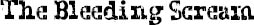

WALKING THROUGH THE halls that morning on my way to the lockers was, I have to say, absolutely awesome. Everything was different now. I was different. Where I usually walked with my head down, trying to avoid being seen, today I walked with my head up, looking around. I wanted to be seen. One kid wearing the same exact costume as mine, long white skull face oozing fake red blood, high-fived me as we passed each other on the stairs. I have no idea who he was, and he had no idea who I was, and I wondered for a second if he would have ever done that if he’d known it was me under the mask.
I was starting to think this was going to go down as one of the most awesome days in the history of my life, but then I got to homeroom. The first costume I saw as I walked inside the door was Darth Sidious. It had one of the rubber masks that are so realistic, with a big black hood over the head and a long black robe. I knew right away it was Julian, of course. He must have changed his costume at the last minute because he thought I was coming as Jango Fett. He was talking to two mummies who must have been Miles and Henry, and they were all kind of looking at the door like they were waiting for someone to come through it. I knew it wasn’t a Bleeding Scream they were looking for. It was a Boba Fett.
I was going to go and sit at my usual desk, but for some reason, I don’t know why, I found myself walking over to a desk near them, and I could hear them talking.
One of the mummies was saying: “It really does look like him.”
“Like this part especially …,” answered Julian’s voice. He put his fingers on the cheeks and eyes of his Darth Sidious mask.
“Actually,” said the mummy, “what he really looks like is one of those shrunken heads. Have you ever seen those? He looks exactly like that.”
“I think he looks like an orc.”
“Oh yeah!”
“If I looked like that,” said the Julian voice, kind of laughing, “I swear to God, I’d put a hood over my face every day.”
“I’ve thought about this a lot,” said the second mummy, sounding serious, “and I really think … if I looked like him, seriously, I think that I’d kill myself.”
“You would not,” answered Darth Sidious.
“Yeah, for real,” insisted the same mummy. “I can’t imagine looking in the mirror every day and seeing myself like that. It would be too awful. And getting stared at all the time.”
“Then why do you hang out with him so much?” asked Darth Sidious.
“I don’t know,” answered the mummy. “Tushman asked me to hang out with him at the beginning of the year, and he must have told all the teachers to put us next to each other in all our classes, or something.” The mummy shrugged. I knew the shrug, of course. I knew the voice. I knew I wanted to run out of the class right then and there. But I stood where I was and listened to Jack Will finish what he was saying. “I mean, the thing is: he always follows me around. What am I supposed to do?”
“Just ditch him,” said Julian.
I don’t know what Jack answered because I walked out of the class without anyone knowing I had been there. My face felt like it was on fire while I walked back down the stairs. I was sweating under my costume. And I started crying. I couldn’t keep it from happening. The tears were so thick in my eyes I could barely see, but I couldn’t wipe them through the mask as I walked. I was looking for a little tiny spot to disappear into. I wanted a hole I could fall inside of: a little black hole that would eat me up.